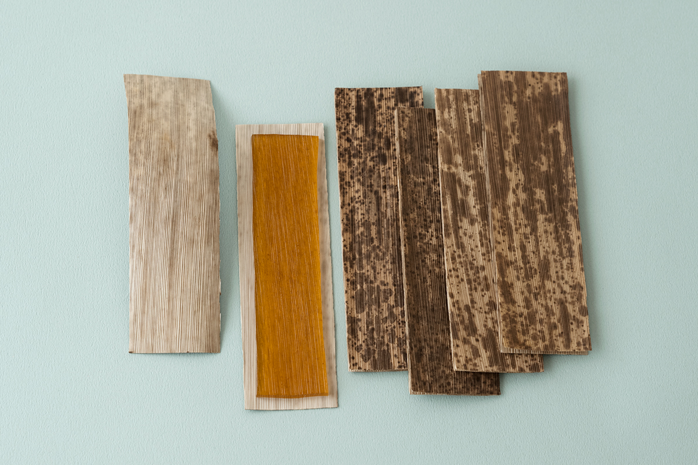
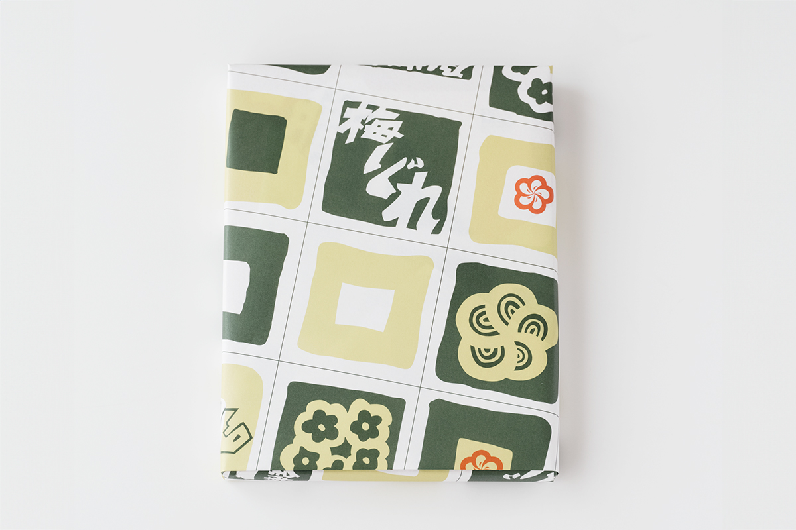
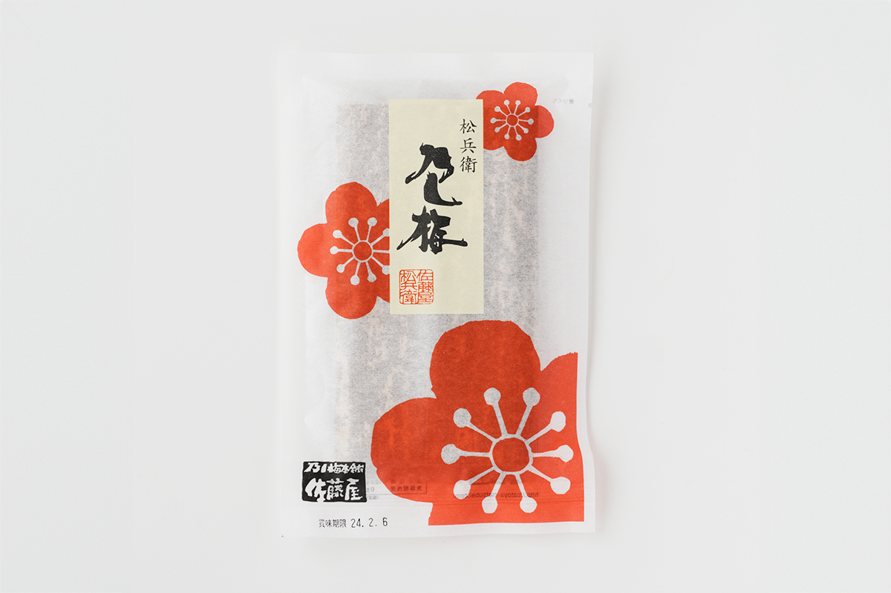

Префектура Ямагата · Ямагата · сладости
Носи-умэ из Ямагаты: сладость из спелой сливы в бамбуковом листе

В Ямагате до сих пор продают сладость, завёрнутую по-старинному в натуральный материал: тонкую пластину из спелой японской сливы между двумя листьями бамбука. Её делает кондитерская SATOYA, которая работает с 1821 года.
Упаковка
Книга о японской упаковке
Арт-директор Хидэюки Ока (1905–1995) был очарован традиционной японской упаковкой и собрал её в книге «Японская традиционная упаковка». Первое издание вышло в 1965 году, в годы быстрого экономического роста. Обёртки из бамбука, дерева и соломы тогда уже исчезали по всей стране, но ещё были в ходу.
Если пролистать книгу сегодня, видно, что лишь немногие продукты из неё до сих пор упаковывают в те же материалы. Но некоторые сладости сохранились и в прежнем красивом виде. Исследовательница японских сладостей, автор исходного текста, называет среди них носи-умэ, знаменитую традиционную сладость Ямагаты: её кладут между двумя пятнистыми листьями бамбука.

История
От лекарства к сладости
Носи-умэ делает кондитерская SATOYA, основанная в 1821 году. По преданию, начало сладости положило снадобье для бодрости, которое в XVII веке привёз из Нагасаки придворный врач князя Ёсиаки Могами. Ёсиаки Могами (1546–1614) был полководцем конца эпохи воюющих провинций и первым правителем княжества Ямагата из рода Могами.
Основатель SATOYA открыл кондитерскую и продолжил делать это снадобье. В первые годы эпохи Мэйдзи, начавшейся в 1868 году, оно получило ту форму, в которой носи-умэ продают и сегодня.
Вкус
Янтарь под бамбуковым листом
Когда снимаешь бамбуковый лист и под ним блестит янтарная пластина носи-умэ, этим хочется любоваться снова и снова. Кисло-сладкий вкус спелой сливы кажется вполне современным и хорошо освежает в жару. Автор исходного текста советует носи-умэ как летний подарок.

SATOYA, главный магазин
- Адрес
- префектура Ямагата, Ямагата, Токамати, 3-10-36
- Телефон
- +81 23-622-3108
- Часы работы
- 9:00–18:00
- Выходные
- без выходных
Фото: Вакана Баба.